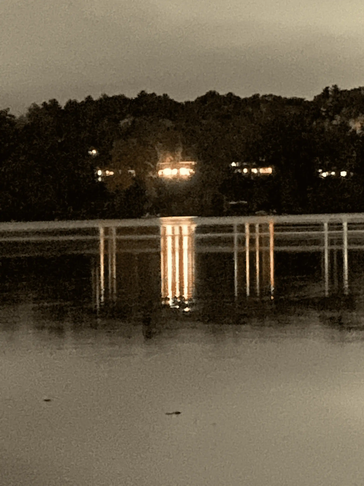

My name is Devon Minor
I am a student at Tufts University majoring in Computer Science and minoring in Entrepreneurship.
My IP address is 130.64.225.2.
I grew up in Boston, MA.
Something no one would expect about me: I don't like to read and write, but I enjoy poetry.
My favorite place:
